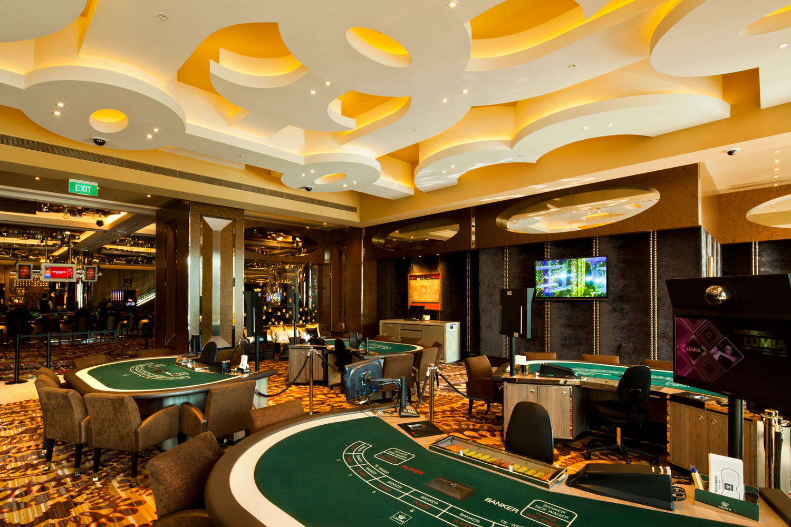
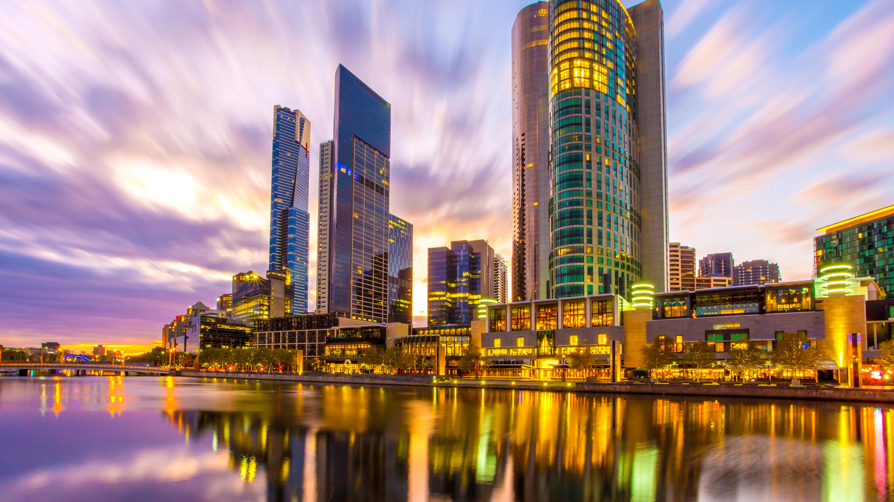

Melbourne
State of Victoria
Melbourne
The metropolis occupies much of the northern and eastern coastlines of Port Phillip Bay and spreads into the Mornington Peninsula, part of West Gippsland, as well as the hinterlands towards the Yarra Valley, the Dandenong and Macedon Ranges. It has a population over 5 million (19% of the population of Australia, as per 2022 census), mostly residing to the east side of the city centre, and its inhabitants are commonly referred to as "Melburnians".
"We can't choose where we come from but we can choose where we go from there"
Wilsons Promontory
Be awed by Victoria's largest coastal wilderness area in Wilsons Promontory National Park. Affectionately known as 'The Prom', it is one of the state's best loved parks – and with good reason. This 50,000 hectare reserve is threaded with a labyrinth of walking tracks that showcase all manner of magical realms sheltering abundant wildlife.
The Twelve Apostles
The Twelve Apostles are a collection of limestone stacks off the shore of Port Campbell National Park, by the Great Ocean Road in Victoria, Australia. The Twelve Apostles are located on the traditional lands of the Eastern Maar peoples.
Kings Domain
Kings Domain covers the area from Linlithgow Avenue south to Domain Road. The Shrine of Remembrance Reserve, the parklands around the Sidney Myer Music Bowl and the area south of the Royal Botanic Gardens facing Domain Road are included as part of Kings Domain.
Crown
 
Casino in Melbourne is one of the most popular places among the local lovers of gambling and guests from all the continents. It’s renowned all over the world owing to being the most advantageous and winning casino on the planet.
Casino
Here, the level of wins per year in around 60%. But this is not the only fact which attracts tourists. Crown Casino has many advantages over its competitors and is looking forward to demonstrating them to you.